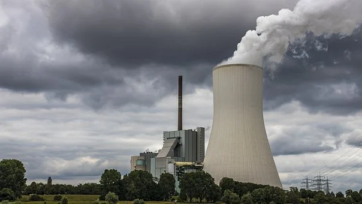
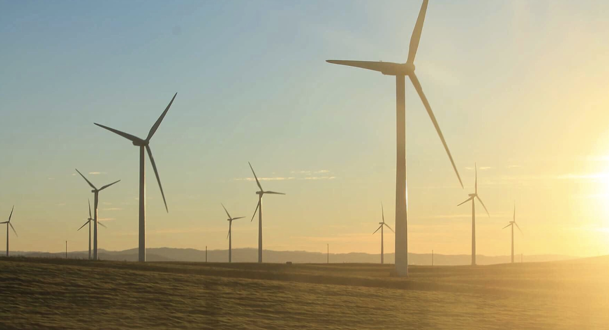

Coal
The residents of Meigs County, Ohio, live beneath the towering smokestacks of four coal-fired power plants. A fifth plant has been proposed, the latest salvo in a battle over the way the U.S. gets electricity.
Grid
The U.S. energy grid is in trouble. The crumbling infrastructure and lag in construction of power lines have set the stage for more serious and frequent blackouts in the coming years.
Wind
Once considered a burden, the wind is now reviving the Texas town of Roscoe by creating new jobs and bringing people back, giving a second chance to this once-dying community.
